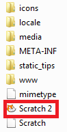

Objective
On completion of this lab you should be able to write more complex programs demonstrating flow of control (i.e. Sequence, Selection and Iteration) whilst using variables and operators.
Lab advice
Your labs are not a race to be the first student finished.
It is very important that you:
- take your time.
- read the instructions carefully.
- ask your lecturer to explain concepts that you don't understand; that is what we are here for!
- attend ALL your classes; attendance will be taken.
Where code is given in labs, don't cut and paste it; maximise your learning by typing the code in.
Opening the Scratch Development Environment
- If you have your own laptop and have installed scratch, please refer to the STEP B (ignore STEP A).
- If you are using the WIT computers, please refer to STEP A (ignore STEP B).
STEP A - Using the Online version (for those using WIT computers)
- Navigate to the following website (open up a new tab in your browser): https://scratch.mit.edu/scratch_1.4/
- You should now have the online editor open, as shown in the screen shot below:

STEP B - Using the Offline version (for those that installed it on their laptops)
- Open Windows Explorer by holding down the windows key and pressing the letter E once.
- When Windows Explorer opens, navigate to the folder where you installed Scratch.
- Double click on the icon (highlighted red below) to start Scratch.

Using Variables
- In this step, you are going to work on the SomethingFishy4 exercise from lectures.
Set up your fish Sprite
- Create a new file.
- Add a fish sprite.
- Delete the cat sprite.
Variables in Scratch
To create a variable in Scratch:
- click on the Data button in the Scripts tab.
- click on the Make a Variable button and give your variable a name.
To view the value stored in your variable, click on the checkbox beside the variable name, as shown in the screen shot below:
SomethingFishy4
- Add the following code:
Test your program
- Click on the green flag to run your program.
- Does it work as expected?
- Does your fish say "Who am I?"? The counter variable should hold a value of 0 at this stage.
- Does your fish, if you press the a key, say "I'm a fish with a five second memory!" and pause for 5 seconds? Is the counter variable increased by 1?
- Does your fish, if you press the c key, ignore it?
Saving your work
- Save your work, calling the file SomethingFishy4.
Variables and Operators
- In this step, you are going to work on the SomethingFishy5 exercise from lectures.
Cloning SomethingFishy4
- As the code in this example is building on the code you wrote for SomethingFishy4, make a copy (i.e. clone) of the SomethingFishy4 file and call it SomethingFishy5.
- Open the SomethingFishy5 file in Scratch.
Refactoring SomethingFishy4 into SomethingFishy5
- Change (refactor) the program so that it is the same as this:

Test your program
- Click on the green flag to run your program.
Does it work as expected?
- Does your fish say "Who am I?"? The counter variable should hold a value of 0 at this stage.
- Does your fish, Only tell the user 3 times that “I’m a fish with a five second memory”?
- If the user asks a 4th time (i.e. they press the ‘a’ key a 4th time), does your fish thell them they have already been told 3 times? Your program should stop running here.
Saving your work
- Save your work, calling the file SomethingFishy5.
Exercises
The exercises are typically based on the material we covered in lectures and the previous steps in this lab.
For each exercise listed below, open a new Scratch project.
Exercise 1
In this exercise, we want your sprite to count from 1 to 20.
- Choose any sprite you fancy.
- Create a variable called counter for this sprite only.
- Set the value of the counter variable to 0.
- Write a loop that will continually add 1 to this variable until the value of 20 is reached. Each time that 1 is added to the variable, your Sprite should display the value.
Exercise 2
Using a loop, get your sprite to count out all the even numbers from 1 to 20 e.g. 2, 4, 6, 8, etc.
Exercise 3
Using a loop, get your sprite to say the running total of all even numbers from 1 to 20 inclusive e.g. 2, 6, 12, 20, 30, 42, etc.
Exercise 4
Using a loop, get your SpaceShip Sprite to countdown from 10 and then blast-off.
- Choose a SpaceShip Sprite.
- Create a variable called countdown for this sprite only.
- Set the value of the countdown variable to 10.
- Get the Sprite to say Starting Countdown....
- Write a loop that gets the Sprite to count down from 10 to 1.
- When 1 is reached, your Sprite should say **Blast off!".
- See can you actually get your Sprite to take off. Hint: look at the Motion scripts.
Challenge Exercise 1
In this exercise, use a loop to get your Sprite to say the lyrics to the song, Ten Green Bottles.
An example of the first verse is below. Keep saying the verses until no green bottles are hanging on the wall.
- 10 green bottles hanging on the wall,
- 10 green bottles hanging on the wall,
- And if one green bottle should accidently fall,
- There'd be 9 green bottles hanging on the wall.
Challenge Exercise 2
In this exercise, your Sprite should choose a random number between 1 and 20.
If the number is even, your Sprite should say Even and display the number.
Likewise, if the number is odd, it should say Odd and display the number.
This processing should continue until the number 7 is chosen at random.
Hint: You will need to use the mod operator for this exercise. When a number is mod by another number, the answer is the remainder. For example, 6 mod 3 is 0 whereas 7 mod 3 is 1.
Solutions
The solutions to this lab can be found here.
You will notice that there are two solutions for each of the first three Exercises above. The reason is that there are multiple ways to approach a problem and each one is correct!